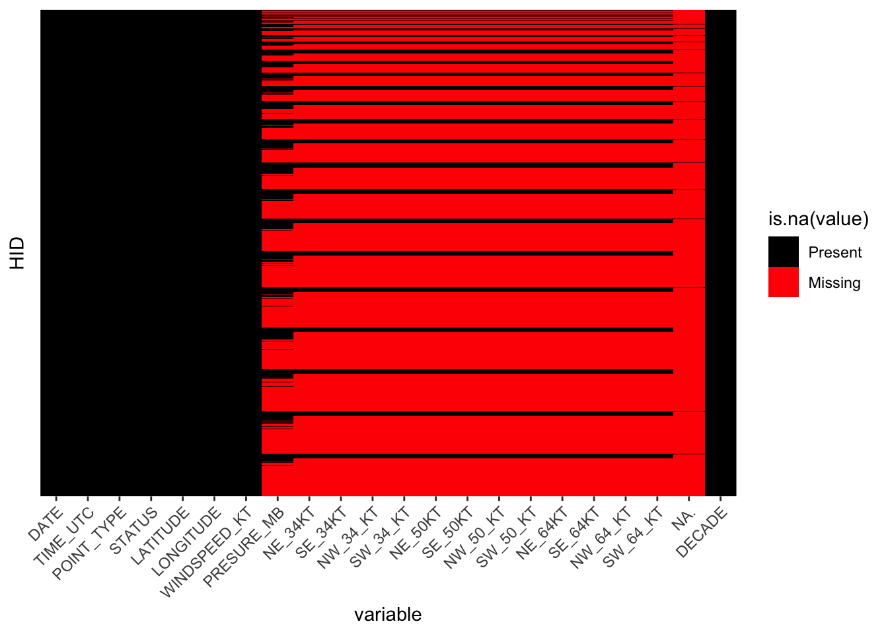
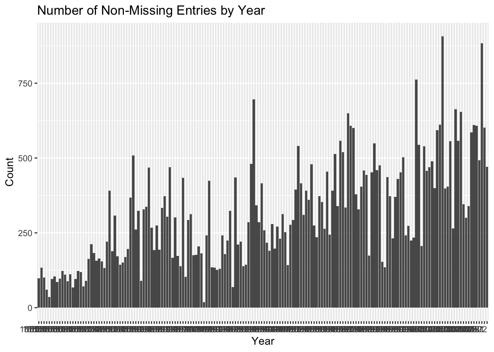
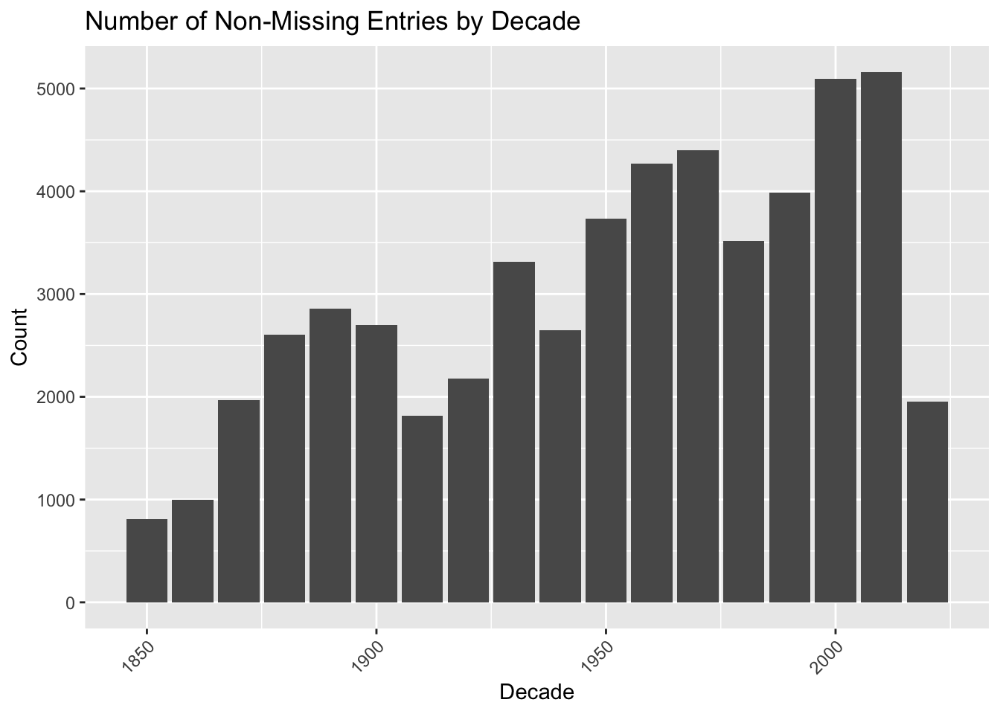

As previously mentioned, this project leverages information from National Hurricane Center (NHC) which is a part of the National Oceanic and Atmospheric Administration. In particular, we focus on a hurricane dataset named HURDAT2, “a comma-delimited, text format with six-hourly information on the location, maximum winds, central pressure, and (beginning in 2004) size of all known tropical cyclones and subtropical cyclones”. Below is a short description of the way the NHC collects the data directly from their website:
The NHC conducts a post-storm analysis of each tropical cyclone in its area of responsibility to determine the official assessment of the cyclone’s history. This analysis makes use of all available observations, including those that may not have been available in real time. In addition, NHC conducts ongoing reviews of any retrospective tropical cyclone analyses brought to its attention, and on a regular basis updates the historical record to reflect changes introduced via the Best Track Change Committee (Landsea et al. 2004a, 2004b, 2008, 2012, Hagen et al. 2012, Kieper et al. 2016, and Delgado et al. 2018). NHC has traditionally disseminated the tropical cyclone historical database in a format known as HURDAT (short for HURricane DATabase – Jarvinen et al. 1984). [1]
Listed below is the description of the features in the dataset:
Record identifier: This code is used to identify records that correspond to landfalls or to indicate the reason for inclusion of a record not at the standard synoptic times (0000, 0600, 1200, and 1800 UTC). For the years 1851-1970 and 1991 onward, all continental United States landfalls are marked, while international landfalls are only marked from 1951 to 1970 and 1991 onward. The landfall identifier (L) is the only identifier that will appear with a standard synoptic time record. The remaining identifiers (see table above) are only used with asynoptic records to indicate the reason for their inclusion. Inclusion of asynoptic data is at the discretion of the Hurricane Specialist who performed the post-storm analysis; standards for inclusion or non-inclusion have varied over time. Identification of asynoptic peaks in intensity (either wind or pressure) may represent either system’s lifetime peak or a secondary peak.
Time: Nearly all HURDAT2 records correspond to the synoptic times of 0000, 0600, 1200, and 1800. Recording best track data to the nearest minute became available within the b-decks beginning in 1991 and some tropical cyclones since that year have the landfall best track to the nearest minute.
Status: Tropical cyclones with an ending tropical depression status (the dissipating stage) were first used in the best track beginning in 1871, primarily for systems weakening over land. Tropical cyclones with beginning tropical depression (the formation stage) were first included in the best track beginning in 1882. Subtropical depression and subtropical storm status were first used beginning in 1968 at the advent of routine satellite imagery for the Atlantic basin. The low status – first used in 1987 - is for cyclones that are not tropical cyclone or subtropical cyclones, nor extratropical cyclones. These typically are assigned at the beginning of a system’s lifecycle and/or at the end of a system’s lifecycle. The tropical wave status – first used in 1981 - is almost exclusively for cyclones that degenerate into an open trough for a time, but then redevelop later in time into a tropical cyclone (for example, AL10-DENNIS in 1981 between 13 and 15 August). The disturbance status is similar to tropical wave and was first used in 1980. It should be noted that for tropical wave and disturbance status the location given is the approximate position of the lower tropospheric vorticity center, as the surface center no longer exists for these stages.
Maximum sustained surface wind: This is defined as the maximum 1-min average wind associated with the tropical cyclone at an elevation of 10 m with an unobstructed exposure. Values are given to the nearest 10 kt for the years 1851 through 1885 and to the nearest 5 kt from 1886 onward. A value is assigned for every cyclone at every best track time. Note that the non-developing tropical depressions of 1967 did not have intensities assigned to them in the b-decks. These are indicated as “-99” currently, but will be revised and assigned an intensity when the Atlantic hurricane database reanalysis project (Hagen et al. 2012) reaches that hurricane season.
Central Pressure: These values are given to the nearest millibar. Originally, central pressure best track values were only included if there was a specific observation that could be used explicitly. Missing central pressure values are noted as “-999”. Beginning in 1979, central pressures have been analyzed and included for every best track entry, even if there was not a specific in-situ measurement available.
Wind Radii – These values have been best tracked since 2004 and are thus available here from that year forward with a resolution to the nearest 5 nm. Best tracks of the wind radii have not been done before 2004 and are listed as “-999” to denote missing data. Note that occasionally when there is a non-synoptic time best track entry included for either landfall or peak intensity, that the wind radii best tracks were not provided. These instances are also denoted with a “-999” in the database.
Radius of Maximum Wind: These values have been best tracked only starting in 2021. Before 2021, the missing data are denoted as “-999”.
2.2 Research Plan
To tackle the analysis of this dataset and investigate the trends of extreme weather events we will conduct the following:
We will use historical data on precipitation and wind speed specifically focusing on metrics like the highest 2-minute wind speed and days with precipitation above certain thresholds. This data spans several decades, providing a comprehensive timeline for analysis.
By plotting time series graphs and conducting statistical trend analysis, we can identify patterns of change in the frequency and intensity of extreme weather events. For instance, an increase in the number of days exceeding a certain wind speed or precipitation threshold over time would indicate a trend toward more severe weather conditions.
We will cross-reference the dates and locations of high wind speed events with those of extreme precipitation events. The dataset’s temporal coverage allows for the examination of seasonal patterns.
2.3 Missing value analysis
Preprocessing
The raw data contains a lot of information, however, the specific names of each feature and described above. The data contained in the dataset includes some information from 1851 and was recently updated on April 7th, 2023 to include in the 2022 hurricane season. We can quickly observe that due to changes in the methods of obtaining the data, and collection of more metrics over the years the data includes a lot of the missing entries, listed as ‘-999’.
Before we proceed some preprocessing steps need to be completed. We first read the data into a data frame and reshape the data by moving the header data into columns for each point.
We then convert the latitudes and longitudes from hemispheric values (NSEW) to decimal values (southern and western values are negative). We also add a DECADE column.
Here we are going to load in the data-set and since the missing values are repressented as “-999”, we will change these into NA.
Code
hurrs =read.csv("Data/hurricanes.csv")hurrs[hurrs ==-999] <-NA# Calculate the number of missing values per columnmissing_values <-sapply(hurrs, function(x) sum(is.na(x)))# Print the number of missing values per columnprint(missing_values)
Although we see how missing data we have per feature, let’s make a couple of plots to visualize the missing data.
Code
library(ggplot2)library(readr)library(reshape2)# Convert the data to long format for plottinglong_data <- reshape2::melt(hurrs, id.vars =c("HID", "HNAME"))# Create a heatmap of missing dataggplot(long_data, aes(x = variable, y = HID)) +geom_raster(aes(fill =is.na(value))) +scale_fill_manual(values =c("black", "red"), labels =c("Present", "Missing")) +theme(axis.text.x =element_text(angle =45, hjust =1),axis.ticks.y =element_blank(), # Remove y-axis ticksaxis.text.y =element_blank()) # Optionally, also remove y-axis text

In this plot we omit the y-ticks showing the Hurricane ID’s as the purpose of this chart is to display the missing values, and the IDS themselves aren’t necessary. Let’s how much missing data there is by year.
Code
library(ggplot2)library(dplyr)# Assuming your dataframe is named hurricanes_df# Ensure the DATE column is treated as a string to extract the yearhurrs$DATE <-as.character(hurrs$DATE)# Extract the year from the DATE columnhurrs$YEAR <-substr(hurrs$DATE, 1, 4)# Count the number of non-missing entries for each yearyearly_data_count <- hurrs %>%group_by(YEAR) %>%summarize(Count =sum(!is.na(DATE)))# Create a bar plotggplot(yearly_data_count, aes(x = YEAR, y = Count)) +geom_bar(stat ="identity") +theme(axis.text.x =element_text(angle = , hjust =1)) +labs(title ="Number of Non-Missing Entries by Year", x ="Year", y ="Count")

This is a little hard to read, so let’s make another plot with decades instead of years
Code
decade_data_count <- hurrs %>%group_by(DECADE) %>%summarize(Count =sum(!is.na(DECADE)))# Create a bar plotggplot(decade_data_count, aes(x = DECADE, y = Count)) +geom_bar(stat ="identity") +theme(axis.text.x =element_text(angle =45, hjust =1)) +labs(title ="Number of Non-Missing Entries by Decade", x ="Decade", y ="Count")

As expected we can observe, that the majority of the data rests in the latter parts of the timeline, with most of the data properly observed in the second half of the 20ths century and onwards. This information will guide our steps for future analysis as we focus on more recent decades (from the 1950s) to observe the trends in hurricanes in our specified states.